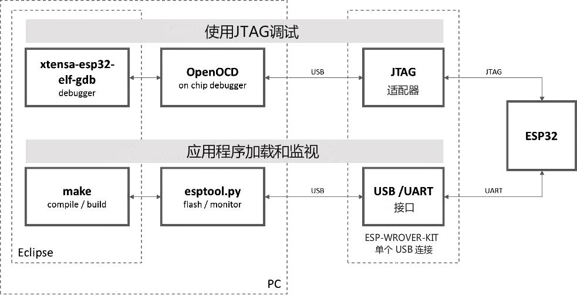

ESP-IDF JTAG 调试流程#
引言#
ESP32 具有两个强大的 Xtensa 内核，支持多种程序架构。ESP-IDF 自带的 FreeRTOS 操作系统支持多核抢占式调度，允许用户以更加直观的方式编写软件。
与此相对地，由于缺乏合适的工具，简便的编程方式也会给程序的调试带来困难，比如找出由两个线程引起的错误，并且这两个线程在单独的 CPU 核上同时运行，那么仅凭 printf 语句会花费很长时间来定位该错误。调试此类问题更好(往往也更快)的方法是使用调试器，将其连接到处理器的调试端口。
乐鑫已完成 OpenOCD 移植，以支持 ESP32 处理器和多核 FreeRTOS 架构（此作为大多数 ESP32 应用程序的基础）。此外，乐鑫还提供了一些 OpenOCD 本身并不支持的工具，以进一步丰富调试功能。
工作原理#
通过 JTAG（Joint Test Action Group）接口使用 OpenOCD 调试 ESP32 时所需要的关键软件和硬件:
包括 xtensa-esp32-elf-gdb 调试器
OpenOCD 片上调试器
连接到 ESP32 目标的 JTAG 适配器，
如下图 “Application Loading and Monitoring” 标志所示。
 JTAG 调试 - 概述图
“Application Loading and Monitoring” 标志显示一组关键的软件和硬件组件，可用于编译、构建和烧写应用程序到 ESP32 上，以及监视来自 ESP32 的运行诊断信息。
我们使用的 ESP-WROVER-KIT 开发板，由于其板载 FT232H 芯片，仅需一根 USB 线即可连接 PC 与 ESP32。FT232H 提供了两路 USB 通道，一路连接到 JTAG，另一路连接到 UART。
根据喜好，除了使用 Eclipse 集成开发环境，还可以直接在命令行终端运行 debugger 和 idf.py build。
选择 JTAG 适配器#
我们使用的 ESP-WROVER-KIT 开发板，它板载了 JTAG 调试接口，无需使用外部 JTAG 硬件适配器和额外线缆来连接 JTAG 与 ESP32。ESP-WROVER-KIT 采用 FT2232H 提供的 JTAG 接口，可以稳定运行在 20 MHz 的时钟频率，外接的适配器很难达到这个速度。
在软件方面，OpenOCD 支持相当多数量的 JTAG 适配器，请自行在网络上寻找并参阅 OpenOCD 支持的适配器列表 （请注意这一列表并不完整），其中还列出了兼容 SWD 接口的适配器，但请注意，ESP32 目前并不支持 SWD。此外，被硬编码为只支持特定产品线的 JTAG 适配器也无法在 ESP32 上工作，例如仅针对 STM32 系列产品的 ST-LINK 适配器。
JTAG 正常工作至少需要连接的信号线有：TDI、TDO、TCK、TMS 和 GND。一些 JTAG 适配器还需要 ESP32 提供一路电源到适配器的某个管脚上（比如 Vtar），用于设置适配器的工作电压。您也可以选择将 SRST 信号线连接到 ESP32 的 CH_PD 管脚上，但请注意，目前 OpenOCD 对该信号线提供的支持相当有限。
安装 OpenOCD#
如果您已经按照前面的章节完成了 ESP-IDF 及其 CMake 构建系统的安装，那么 OpenOCD 已经被默认安装到了您的开发系统中。在设置开发环境 结束后，在终端中运行如下 OpenOCD 命令:
openocd --version
终端会输出类似以下内容的信息（实际版本号可能会更新）:
Open On-Chip Debugger v0.10.0-esp32-20190708 (2019-07-08-11:04)
Licensed under GNU GPL v2
For bug reports, read
http://openocd.org/doc/doxygen/bugs.html
您还可以检查 OPENOCD_SCRIPTS 环境变量的值，以确认 OpenOCD 配置文件的路径，Linux 和 macOS 用户可以在终端输入 echo $OPENOCD_SCRIPTS。如果终端输出了有效路径，则表明您已经正确安装 OpenOCD。
配置并连接 JTAG 接口#
确保实验箱上的 JTAG 引脚已经使用跳线帽连接
检查 ESP32 上用于 JTAG 通信的引脚是否被接到了其它硬件上，这可能会影响 JTAG 的工作。
ESP32 引脚和 JTAG 接口信号
ESP32 引脚 |
JTAG 信号 |
|---|---|
MTDO / GPIO15 |
TDO |
MTDI / GPIO12 |
TDI |
MTCK / GPIO13 |
TCK |
MTMS / GPIO14 |
TMS |
GND |
GND |
配置 USB 驱动#
使用标准 USB A / micro USB B 线将 ESP-WROVER-KIT 与计算机相连接，并打开开发板的电源。
打开终端，输入
ls -l /dev/ttyUSB*命令检查操作系统是否能够识别板子的 USB 端口。类似识别结果如下：ls -l /dev/ttyUSB* crw-rw---- 1 root dialout 188, 0 Jul 10 19:04 /dev/ttyUSB0 crw-rw---- 1 root dialout 188, 1 Jul 10 19:04 /dev/ttyUSB1
根据 OpenOCD README 文档 中 “Permissions delegation” 小节的介绍，设置这两个 USB 端口的访问权限。
在命令行中修改 USB 权限（单次生效）
sudo chmod 777 /dev/ttyUSB0 sudo chmod 777 /dev/ttyUSB1
添加用户组到 plugdev（永久生效）
对于大多数 Linux 发行版（如 Ubuntu 等），我们需要将 openocd-esp32 提供的
.rules文件放到/etc/udev/rules.d/下（具体请参考自己操作系统的文档）.rules 文件目录：
/$HOME/.espressif/tools/openocd-esp32/v0.11.0-esp32-20211220/openocd-esp32/share/openocd/contrib其中.espressif 是隐藏文件夹
之后需要将你的用户添加到 plugdev 组中
sudo usermod -a -G plugdev $USER注销并重新登录 Linux 系统，然后重新插拔板子的电源使之前的改动生效。在终端再次输入
ls -l /dev/ttyUSB*命令进行验证，查看这两个设备的组所有者是否已经从 dialout 更改为 plugdels -l /dev/ttyUSB* crw-rw-r-- 1 root plugdev 188, 0 Jul 10 19:07 /dev/ttyUSB0 crw-rw-r-- 1 root plugdev 188, 1 Jul 10 19:07 /dev/ttyUSB1
使用标准 USB A / micro USB B 线将 ESP-WROVER-KIT 与计算机相连接，并打开板子的电源。打开终端，输入
ls -l /dev/ttyUSB*命令检查操作系统是否能够识别板子的 USB 端口。类似识别结果如下：
如果看到类似的输出结果，并且你也是 plugdev 组的成员， 那么设置工作就完成了。
具有较低编号的 /dev/ttyUSBn 接口用于 JTAG 通信，另一路接口被连接到 ESP32 的串口（UART），用于上传应用程序映像给 ESP32 进行烧写。
现在，ESP-WROVER-KIT 的 JTAG 接口应该可以被 OpenOCD 使用。
运行 OpenOCD#
配置完目标并将其连接到电脑后，即可启动 OpenOCD。
打开终端，按照快速入门指南中的 设置好开发环境 章节进行操作，然后运行如下命令，以启动 OpenOCD（该命令适用于 Windows、Linux 和 macOS）:
openocd -f board/esp32-wrover-kit-3.3v.cfg
现在您应该可以看到如下输出（此日志来自板载 ESP32-WROOM-32 模组的 ESP-WROVER-KIT 开发板）:
user-name@computer-name:~/esp/esp-idf$ openocd -f board/esp32-wrover-kit-3.3v.cfg
Open On-Chip Debugger v0.10.0-esp32-20190708 (2019-07-08-11:04)
Licensed under GNU GPL v2
For bug reports, read
http://openocd.org/doc/doxygen/bugs.html
none separate
adapter speed: 20000 kHz
force hard breakpoints
Info : ftdi: if you experience problems at higher adapter clocks, try the command "ftdi_tdo_sample_edge falling"
Info : clock speed 20000 kHz
Info : JTAG tap: esp32.cpu0 tap/device found: 0x120034e5 (mfg: 0x272 (Tensilica), part: 0x2003, ver: 0x1)
Info : JTAG tap: esp32.cpu1 tap/device found: 0x120034e5 (mfg: 0x272 (Tensilica), part: 0x2003, ver: 0x1)
Info : esp32: Debug controller was reset (pwrstat=0x5F, after clear 0x0F).
Info : esp32: Core was reset (pwrstat=0x5F, after clear 0x0F).
如果出现指示权限问题的错误，请打开 ~/esp/openocd-esp32 目录，参阅 OpenOCD README 文件中关于 “Permissions delegation” 的说明。
如果遇到无法找到配置文件的错误，例如 Can’t find board/esp32-wrover-kit-3.3v.cfg，请检查 OPENOCD_SCRIPTS 环境变量是否设置正确，OpenOCD 根据此变量来查找 -f 指定的文件，详见 安装 OpenOCD。此外，还需要检查配置文件是否确实位于该路径下。
如果出现 JTAG 错误（例如输出为 …all ones 或 …all zeroes），请检查硬件连接是否正确，除了 ESP32 的管脚之外是否还有其他信号连接到了 JTAG，并查看是否所有器件都已经上电。
上传待调试的应用程序#
按照正常步骤构建并上传 ESP32 应用程序，具体请参阅 ESP-IDF 命令行基本流程 章节。
除此以外，您还可以使用 OpenOCD 通过 JTAG 接口将应用程序镜像烧写到闪存中，命令如下:
openocd -f board/esp32-wrover-kit-3.3v.cfg -c "program_esp filename.bin 0x10000 verify exit"
其中 OpenOCD 的烧写命令 program_esp 格式如下：
program_esp <image_file> <offset> [verify] [reset] [exit]
image_file - 程序镜像文件存放的路径
offset - 镜像烧写到闪存中的偏移地址
verify - 烧写完成后校验闪存中的内容（可选）
reset - 烧写完成后重启目标（可选）
exit - 烧写完成后退出 OpenOCD（可选）
启动调试器#
ESP32 的工具链中带有 GNU 调试器（简称 GDB），它和其它工具链软件共同存放于 xtensa-esp32-elf-gdb 中。现在我们在命令行环境下，实现 GDB 的调试
命令行模式#
为了能够启动调试会话，需要先启动并运行目标，如果还没有完成，请按照 配置 ESP32 目标板 中的介绍进行操作。
打开一个新的终端会话并前往待调试的项目目录，比如：
cd ~/esp/blink
当启动调试器时，通常需要提供几个配置参数和命令，为了避免每次都在命令行中逐行输入这些命令，您可以新建一个配置文件，并将其命名为
gdbinit:target remote :3333 set remote hardware-watchpoint-limit 2 mon reset halt flushregs thb app_main c
将此文件保存在当前目录中。
有关
gdbinit文件内部的更多详细信息，请参阅 调试器的启动命令的含义 章节。准备好启动 GDB，请在终端中输入以下内容：
xtensa-esp32-elf-gdb -x gdbinit build/blink.elf
如果前面的步骤已经正确完成，您会看到如下所示的输出日志，在日志的最后会出现
(gdb)提示符：user-name@computer-name:~/esp/blink$ xtensa-esp32-elf-gdb -x gdbinit build/blink.elf GNU gdb (crosstool-NG crosstool-ng-1.22.0-61-gab8375a) 7.10 Copyright (C) 2015 Free Software Foundation, Inc. License GPLv3+: GNU GPL version 3 or later <http://gnu.org/licenses/gpl.html> This is free software: you are free to change and redistribute it. There is NO WARRANTY, to the extent permitted by law. Type "show copying" and "show warranty" for details. This GDB was configured as "--host=x86_64-build_pc-linux-gnu --target=xtensa-esp32-elf". Type "show configuration" for configuration details. For bug reporting instructions, please see: <http://www.gnu.org/software/gdb/bugs/>. Find the GDB manual and other documentation resources online at: <http://www.gnu.org/software/gdb/documentation/>. For help, type "help". Type "apropos word" to search for commands related to "word"... Reading symbols from build/blink.elf...done. 0x400d10d8 in esp_vApplicationIdleHook () at /home/user-name/esp/esp-idf/components/esp32/./freertos_hooks.c:52 52 asm("waiti 0"); JTAG tap: esp32.cpu0 tap/device found: 0x120034e5 (mfg: 0x272 (Tensilica), part: 0x2003, ver: 0x1) JTAG tap: esp32.slave tap/device found: 0x120034e5 (mfg: 0x272 (Tensilica), part: 0x2003, ver: 0x1) esp32: Debug controller was reset (pwrstat=0x5F, after clear 0x0F). esp32: Core was reset (pwrstat=0x5F, after clear 0x0F). esp32 halted. PRO_CPU: PC=0x5000004B (active) APP_CPU: PC=0x00000000 esp32: target state: halted esp32: Core was reset (pwrstat=0x1F, after clear 0x0F). Target halted. PRO_CPU: PC=0x40000400 (active) APP_CPU: PC=0x40000400 esp32: target state: halted Hardware assisted breakpoint 1 at 0x400db717: file /home/user-name/esp/blink/main/./blink.c, line 43. 0x0: 0x00000000 Target halted. PRO_CPU: PC=0x400DB717 (active) APP_CPU: PC=0x400D10D8 [New Thread 1073428656] [New Thread 1073413708] [New Thread 1073431316] [New Thread 1073410672] [New Thread 1073408876] [New Thread 1073432196] [New Thread 1073411552] [Switching to Thread 1073411996] Temporary breakpoint 1, app_main () at /home/user-name/esp/blink/main/./blink.c:43 43 xTaskCreate(&blink_task, "blink_task", 512, NULL, 5, NULL); (gdb)
注意上面日志的倒数第三行显示了调试器已经在 app_main()函数的断点处停止，该断点在 gdbinit 文件中设定。由于处理器已经暂停运行，LED 也不会闪烁。如果这也是您看到的现象，您可以开始调试了。
如果您不太了解 GDB 的常用方法，请查阅 使用命令行的调试示例 文章中的调试示例章节 调试范例。
idf.py 模式#
您还可以使用 idf.py 更方便地执行上述提到的调试命令，可以使用以下命令：
idf.py openocd在终端中运行 OpenOCD，其配置信息来源于环境变量或者命令行。默认会使用
OPENOCD_SCRIPTS环境变量中指定的脚本路径，它是由 ESP-IDF 项目仓库中的导出脚本（export.shorexport.bat）添加到系统环境变量中的。 当然，您可以在命令行中通过--openocd-scripts参数来覆盖这个变量的值。至于当前开发板的 JTAG 配置，请使用环境变量
OPENOCD_COMMANDS或命令行参数--openocd-commands。如果这两者都没有被定义，那么 OpenOCD 会使用-fboard/esp32-wrover-kit-3.3v.cfg参数来启动。idf.py gdb根据当前项目的 elf 文件自动生成 GDB 启动脚本，然后会按照 使用命令行调试 中所描述的步骤启动 GDB。
idf.py gdbtui和步骤 2 相同，但是会在启动 GDB 的时候传递
tui参数，这样可以方便在调试过程中查看源代码。idf.py gdbgui启动 gdbgui，在浏览器中打开调试器的前端界面。请在运行安装脚本时添加 “–enable-gdbgui” 参数，即运行
install.sh --enable-gdbgui，从而确保支持 “gdbgui” 选项。上述这些命令也可以合并到一起使用，
idf.py会自动将后台进程（比如 openocd）最先运行，交互式进程（比如 GDB，monitor）最后运行。常用的组合命令如下所示:
idf.py openocd gdbgui monitor
上述命令会将 OpenOCD 运行至后台，然后启动 gdbgui 打开一个浏览器窗口，显示调试器的前端界面，最后在活动终端打开串口监视器。
IDE 模式#
实际应用中，我们并不直接在命令行终端中调用和操作 GDB ，而是在 IDE (例如 Eclipse、Visual Studio Code, cLion 等）中进行调用，使用图形用户界面间接操作 GDB，这一方法无需在终端中输入任何命令。本手册选择在 Clion 中进行 Debug 调试。
Clion 下的调试器配置与使用将在下一章 Clion 下 ESP-IDF 的配置与开发 中进行讲解。